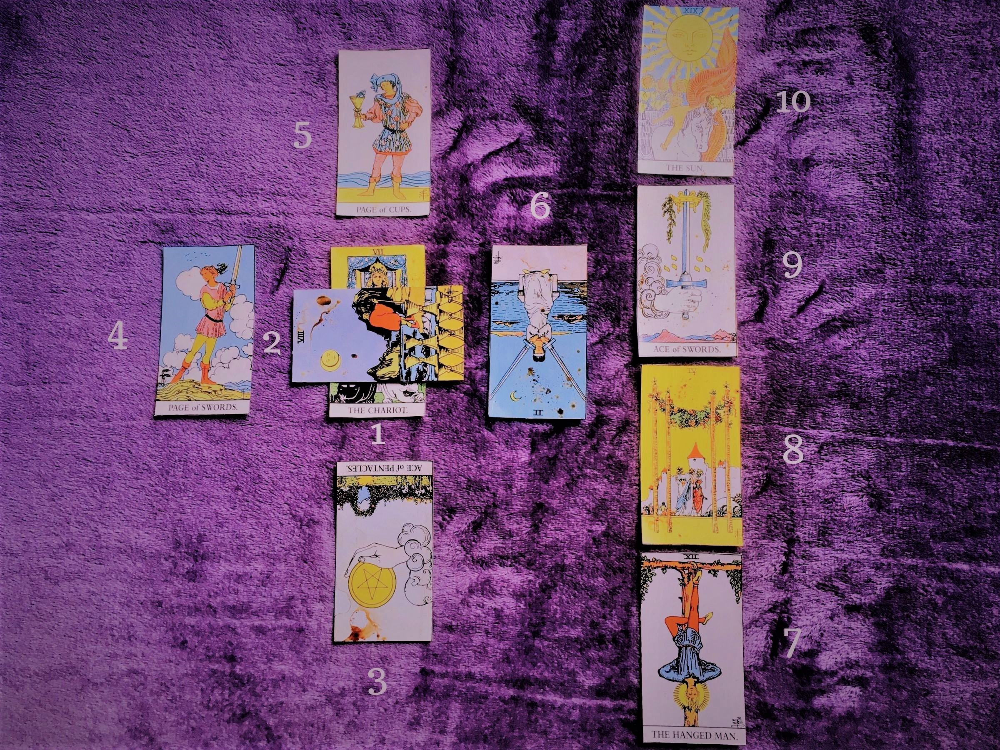

Ce or fi etalările?
Modul de așezare a cărților pentru a afla răspuns la o întrebare, ordinea lor de extragere și așezarea pe masă, se numește etalare (termen împrumutat din jocurile de societate), citire sau tiraj (termenul vechi clasic). Sunt foarte multe tipuri de etalări, de la simpla extragere a unei cărți, la etalarea cu 10 cărți (Crucea celtică - cea mai cunoscută și mai utilizată), etalarea astrologică sau cercul celest (12 cărți) sau etalarea țigănească (21 de cărți) Cu cât sunt mai multe cărți atât mai complicată devine etalarea, deoarece informațiile trebuie conectate și armonizate , deși se obțin mai multe detalii. Pe de altă parte, chiar și o singură carte poate fi dificil de interpretat, pentru că are mai multe semnificații și depinde de: Întrebare, Poziția cărții, Cărțile care o înconjoară, Orientarea sa (poziția directă sau inversă)
Crucea celtică
Crucea celtică
Crucea celtică
„Crucea celtică” este cea mai cunoscută etalare tarot in epoca antică și modernă. 10 poziții a crucii celtice oferă destulă informație pentru reprezentare a celor mai complicate întrebări legate de dragoste, carieră, familie și a fost un mod standart de citire perntru sute de ani.
- Cartea 1 - reprezintă baza, esența problemei.
- Cartea 2 - cartea reprezintă puterea, schimbarea,obstacol. Poziția orizontală descrie „încrucișarea” și arată o alternativă a întrebării.
- Cartea 3 - gânduri, planuri, ce persoana gândește referitor la întrebare.
- Cartea 4 - sentimente. Reprezintă emoțiile omului.
- Cartea 5 - motivație, trecutul recent.
- Cartea 6 - viitorul recent. Cartea arată evenimentele în viitorul apropiat.
- Cartea 7 - desfășurare.
- Cartea 8 - mediul înconjurător.
- Cartea 9 - influeța, schimbăre bruscă, speranță.
- Cartea 10 - rezultat, final, viitor.